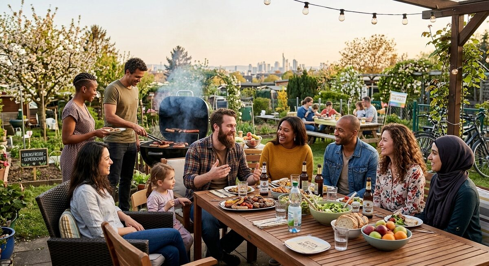

Teil 2 · Bild und Erfahrung
Karte 033
Freizeit mit Freunden im Café oder beim Grillen
Ausführliches Übungsmaterial zur Vorder- und Rückseite der Karte.

Ihre Aufgabe
- die Personen und die Stimmung
- was die Gruppe gerade macht
- warum solche Treffen wichtig sind
- wie Sie selbst Freizeit mit anderen verbringen
- was ein gutes Treffen angenehm macht
Interaktives Sprechtraining
Mit ChatGPT sprechen üben
Kopiere zuerst die Übungsanweisung. Öffne anschließend die ChatGPT-App oder ChatGPT im Browser, starte den Sprachmodus (Voice Mode) und füge den Prompt in diesen Chat ein.
- Tippe auf „Prompt kopieren“.
- Öffne anschließend die ChatGPT-App oder nutze den Browser-Link.
- Melde dich bei Bedarf an und starte in ChatGPT zuerst den Sprachmodus (Voice Mode).
- Füge den bereits kopierten Prompt in den Chat des Sprachmodus (Voice Mode) ein und sende ihn ab.
- Beginne anschließend die Sprechübung.
- Wenn du die Übung beenden und Feedback bekommen möchtest, sage:
Die Übung ist beendet. Bitte gib mir jetzt Feedback.
Prompt anzeigen oder manuell kopieren
ChatGPT ist ein externer Dienst. Für den Sprachmodus (Voice Mode) musst du dich möglicherweise bei deinem ChatGPT-Konto anmelden und den Zugriff auf das Mikrofon erlauben. Verfügbare Funktionen hängen von deinem Gerät und Konto ab. Die Übung ersetzt keine offizielle Prüfungsbewertung.
Nützliche Satzanfänge
- Ich sehe eine Gruppe, die …
- Die Stimmung scheint … zu sein.
- Solche Treffen sind wichtig, weil …
- Ich mache das ähnlich / anders, denn …
- Angenehm wird ein Treffen, wenn …
Modellantwort anhören
Höre zuerst aufmerksam zu. Sprich danach nicht einfach alles nach, sondern bearbeite die Aufgabe mit eigenen Informationen.
Modellantwort
Ich sehe eine Gruppe von Menschen, die ihre Freizeit zusammen verbringt. Vielleicht sitzen sie in einem Café oder sie grillen draußen. Sie reden, lachen und wirken entspannt. Die Stimmung scheint offen und freundlich zu sein. Ich denke, dass solche Treffen für viele Menschen wichtig sind, weil man im Alltag oft wenig Zeit hat und bewusste gemeinsame Momente deshalb besonders wertvoll werden.
Ich treffe mich auch gern mit Freunden oder Bekannten, wenn es zeitlich passt. Manchmal trinken wir nur einen Kaffee, manchmal essen wir zusammen oder gehen spazieren. Solche Treffen tun gut, weil man abschalten, reden und neue Energie bekommen kann. Besonders wenn man in einem neuen Land lebt, sind soziale Kontakte sehr wichtig. Ein gutes Treffen braucht für mich keine perfekte Planung. Wichtig sind eher eine entspannte Atmosphäre, gegenseitiges Interesse und, ja, dass alle sich willkommen fühlen.
Mögliche Prüferfragen und Antwortideen
-
Treffen Sie Freunde lieber drinnen oder draußen?
Antwortidee: Im Sommer lieber draußen, im Winter eher drinnen.
-
Wie oft haben Sie Zeit für solche Treffen?
Antwortidee: Nicht sehr oft, aber ich versuche es am Wochenende.
-
Was ist bei einem Grillabend wichtig?
Antwortidee: Gutes Wetter, genug Essen und eine entspannte Stimmung.
-
Warum sind Freundschaften im Alltag wichtig?
Antwortidee: Weil sie gegen Einsamkeit helfen und den Alltag leichter machen.
Wortschatz
| Deutsch | Englisch |
|---|---|
| das Grillen | barbecue |
| die Gruppe | group |
| wertvoll | valuable |
| abschalten | to switch off / relax |
| die Atmosphäre | atmosphere |
| willkommen | welcome |
| das Interesse | interest |
| der Bekannte / die Bekannte | acquaintance |
Schnelltraining
Beschreiben Sie zuerst die Stimmung auf dem Bild. Danach sagen Sie, was für Sie persönlich ein gutes Treffen ausmacht.